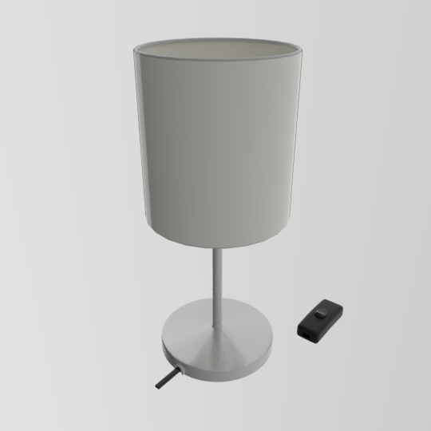

The Ikea Ingared beige is a typical cheap desk luminaire. It has a brushed metal anisotropic stand (galvanized steel with acrylic coating), and a beige polystyrene (100% polyester) shade.
This 3D model comes with a wire profile so you can model your own wire (only the wire stub is included), as well as a switch so you may include the switch. The switch model is shown in the preview adjacent to the luminaire. In reality, the switch is placed about 100mm down the wire. A plug is not included with the model.
If you are looking for a lamp to place inside this luminaire and aren't fussed about a particular bulb, you can use the LED Ikea Ryet 50325332 2700K lamp.
Materials
The colours have been calibrated with Macbethcal but the specularity and roughness values are guessed.
A texture is provided to give the brushed anisotropic look. This is because it is actually a fake texture in real life. A specular map is used to vary the specularity of the brushing. Although the averages should be correct, the exact specularity change is guessed.
Usage
This Radiance model follows the Radiance Filesystem Hierarchy
Standard. As
such, please run make lib to build the Radiance mesh file. Once done, you can
use this in your scene by:
!xform lib/luminaire-ikea-ingared-beige/obj/luminaire.rad
!xform lib/luminaire-ikea-ingared-beige/obj/switch.rad
Authors
This model was created by Dion Moult.